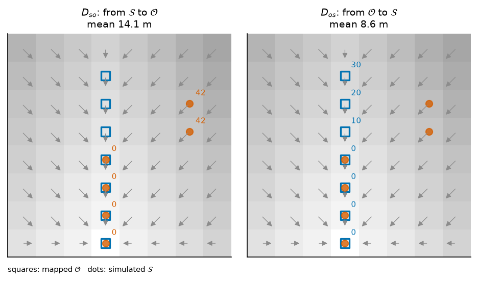
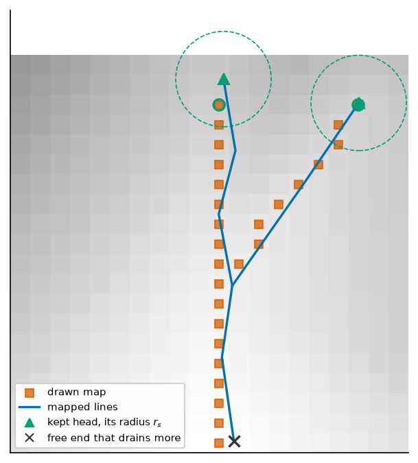
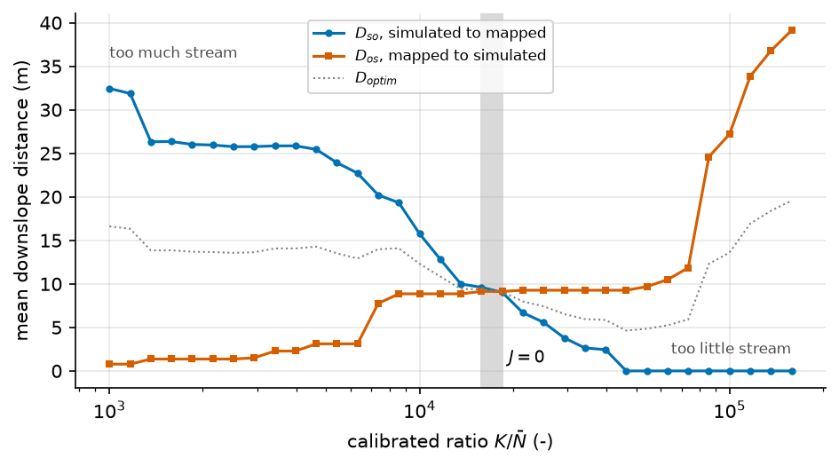

Downslope distance between two networks#
A mapped stream network and a simulated one rarely coincide. This page defines how far apart they are, measured along the paths the water takes, and the criterion built on that distance, the method of Abhervé et al. [2023]. It answers one question. Given a model that makes a network of streams and a map that draws another, how long is the walk downslope from one to the other, in each direction, and at which value of the calibrated ratio do the two walks balance?
How a model makes streams in plain words is on How the model makes streams. The keys of a calibration on a network are in [calibration.outputs].
Note
Scope. The page covers the distances, the criterion, what it identifies, and how the mapped network is drawn on the mesh. The simulated network itself, from the release flux to the flowing cells, is on Where the water table reaches the surface. The search that moves a parameter until the criterion reaches zero is described only where it shapes the criterion.
Notation of this page
Every cell \(n\) has a centre \(x_n\) and an area \(a_n\). A distance is a length in metres along cell-to-cell links, centre to centre. Sets of cells are written with capital letters.
Symbol |
Meaning |
Unit |
Set by |
|---|---|---|---|
\(B\) |
saturated thickness, \(B(h) = \min\bigl(\max(h - z_\mathrm{bot}, 0), H\bigr)\) |
m |
state, not a field |
\(\bar B\) |
saturated thickness averaged by area over the catchment ( |
m |
derived |
\(K\) |
horizontal hydraulic conductivity, the same along \(x\) and \(y\) |
m/s |
|
\(T\) |
transmissivity, \(T = K\,B\) |
m²/s |
derived |
\(\bar N\) |
recharge averaged over the catchment and a period of time ( |
m/s |
derived |
\(n, m\) |
cell indices; \(\mathcal{N}(n)\) is the set of cells that share a face with \(n\) |
the grid, The mesh |
|
\(a_n\) |
plan area of cell \(n\) |
m² |
the grid |
\(\epsilon\) |
rise per step of the priority flood inside a filled depression |
m |
1 mm, a constant of the code |
\(r(n)\) |
receiver of cell \(n\), the one cell it drains to; \(-1\) when it has none |
derived |
|
\(\mathcal{N}_D(n)\) |
neighbours a cell may drain to: the cells sharing a node on a quad mesh, a face on any other |
|
|
\(C_n\) |
drain conductance of cell \(n\) |
m²/s |
|
\(b_d\) |
thickness of the drain bed in the derived conductance |
m |
|
\(z^d_n\) |
drain elevation of cell \(n\) |
m |
derived |
\(q^\mathrm{rel}_n\) |
water the aquifer releases to the surface in cell \(n\) ( |
m³/s |
derived |
\(\tau_\mathrm{s}\) |
share of its own recharge a cell must release to count as a source |
||
\(\Sigma\) |
the sources: cells that release more than their threshold |
derived |
|
\(\mathcal{S}\) |
the simulated network: the downstream closure of \(\Sigma\) |
derived |
|
\(D\) |
the descent of the model top |
built with every MODFLOW grid |
|
\(D_{so}\) |
mean downslope distance from the simulated network to the mapped one ( |
m |
derived |
\(D_{os}\) |
mean downslope distance from the mapped network to the simulated one ( |
m |
derived |
\(J_{signed}\) |
\(D_{so} - D_{os}\), the residual a root search drives to zero ( |
m |
derived |
\(J\) |
\(\lvert D_{so} - D_{os}\rvert\), the cost of the |
m |
|
\(D_{optim}\) |
\((D_{so} + D_{os}) / 2\), a diagnostic ( |
m |
derived |
\(h_{obs}\) |
cell size where the mapped network lies, the median distance between neighbouring cell centres over the mapped cells ( |
m |
derived |
\(r_{optim}\) |
\(D_{optim} / h_{obs}\), the validity indicator ( |
derived |
|
\(V\) |
the length \(D_{optim}\) must stay under for the result to be valid ( |
m |
|
\(L_{cap}\) |
longest descent to the outlet inside the catchment; the value a cell whose descent never meets its target takes ( |
m |
derived |
\(\alpha_o\) |
share of the mapped network in its own downslope closure, inside the catchment ( |
warning level: |
|
\(K/\bar N\) |
conductivity over mean recharge ( |
derived |
|
\(T/\bar N\) |
\(K\,\bar B / \bar N\), transmissivity over recharge ( |
m |
derived |
\(\mathcal{O}\) |
the mapped network, drawn on the cells |
||
\(d_T(n)\) |
downslope distance from cell \(n\) to the set \(T\) |
m |
derived |
\(\ell(n)\) |
distance from the centre of \(n\) to the centre of its receiver |
m |
derived |
\(A_d(n)\) |
area drained through cell \(n\), the cell included |
m² |
derived |
\(o\) |
outlet cell that closes the catchment |
derived from the pour point |
|
\(\Omega_o\) |
the catchment scored: the cells whose descent reaches \(o\) |
derived |
|
\(\mathcal{E}\) |
water bodies: lake cells and other cells whose surface water is an input |
derived |
|
\(\mu(n)\) |
weight of a cell in a mean: 1, or its area |
1 or m² |
|
\(f_{so}, f_{os}\) |
share of a support whose descent never meets its target ( |
bound on \(f_{so}\): |
|
\(\sigma_o\) |
positional accuracy of the mapped network |
m |
|
\(r_s\) |
largest distance between a stream head and the cell it lands on |
m |
|
\(A_{d,\min}\) |
drained area a cell needs before a head may land on it |
km² |
The graph the distances follow#
A distance follows a flow path, and a flow path exists only where the depressions are resolved. The code floods the model top on the mesh with the priority flood of Routing on the mesh: the descent D, (32), seeded on the border of the active domain, and reads the receivers \(r(n)\) of (34) on the flooded copy. The edge length \(\ell(n)\) is the distance from the centre of \(n\) to the centre of \(r(n)\).
The flood is seeded on the whole border, where water leaves the model, not on the outlet alone: sealing one outlet would fill a valley of the buffer up to a col of the divide. The criterion does not read the descent \(D\) the build stores (The graph of the stream criterion). The map is never burned into the surface: an observation never enters the routing surface or the model top.
1. The downslope distance to a set#
For a target set \(T\), the distance from a cell to \(T\) is the length of its descent down to the first cell of \(T\):
With one receiver per cell, exactly one descending path leaves a cell, so there is no shortest path to search for. The distance is not a Euclidean nearest distance: a source fifty metres from a stream but across a divide is far away downslope. And it is not symmetric: \(d_{\mathcal{O}}\) on the simulated cells and \(d_{\mathcal{S}}\) on the mapped cells differ, which is what lets one cost weigh an excess of simulated stream against a missing one. An empty target gives \(+\infty\) everywhere and does not raise: an empty simulated network is the legitimate end of a search interval.

Fig. 61 Two networks on an 8 by 8 grid of 10 m cells, with the receivers of the
flooded top. Left: from each simulated cell down to the map, the two hillside
cells walk 42 m. Right: from each mapped cell down to the simulated network,
the three upper cells walk 10, 20 and 30 m. The two means differ, and so do
the cells that carry them. Every number is a call of
downslope_distance_to_mask.#
In the code: downslope_distance_to_mask.
2. The outlet, the catchment and the saturation length#
The outlet \(o\) closes the catchment, usually at the gauging station. With
\(A_d(n) = a_n + \sum_{m : r(m) = n} A_d(m)\) the area drained through \(n\), the
outlet is the most drained cell within two neighbour rings of the cell nearest
to the pour point the catchment was delineated from (two cells is the
SnapPourPoints distance of the paper, read on the mesh). Without a pour point,
the most drained cell of the delineated polygon closes the catchment, and without
the polygon the largest basin of the mesh does, with a warning.
The catchment scored, and the longest descent in it, are read on the same graph:
The delineated polygon builds the domain and places the outlet; it is not the
support. Their symmetric difference over the area of the polygon is published as
catchment_mismatch, with a warning above five per cent. \(L_{cap}\) is static: it
is the value an unreachable cell takes in the means (5. The two mean distances).
In the code: resolve_outlet.
3. The two networks on the cells#
The simulated network \(\mathcal{S}\) is the downstream closure of the sources \(\Sigma\), the cells whose release flux exceeds a share of their own recharge, (41). The release flux is the union of (40), the same union for the criterion and for the stored field. A steady phase reads one state of the run.
The mapped network \(\mathcal{O}\) is a set of lines, drawn on the cells by
one of two rules chosen by
observed_rasterization.
Heads (the default) keeps only where the map says a stream starts, and lets the receiver graph draw the rest: the path a ditch gave a mapped line is something a model on a DEM cannot reproduce, and drawn cell by cell it would count as error.
The lines are merged between junctions and free ends.
A free end is a head when the largest drained area within the radius \(r_s\) of it does not exceed the same quantity at the other end of its reach. The drained area decides, never the direction the line was drawn in.
A head lands on the nearest active cell within \(r_s\) that drains at least \(A_{d,\min}\), or is lost.
From each landing cell, the trace follows the receivers until the descent ends or meets a traced cell.
The foot of each dam of a lake with a declared spillway is a forced head: the stream under a reservoir has no free end. Only the MODFLOW 6 build stores the dam feet.
The traced map is connected to the outlet by construction.

Fig. 63 The heads rule on a toy valley of 25 m cells, from one call of
trace_from_heads. The two upstream free ends drain less than the
confluence and are kept; the downstream end drains more and is not a head.
The drawn map follows the descent of the model, not the line.#
Crossing keeps a cell when a mapped line crosses the segment joining the
centres of two cells that share an edge: on a structured grid, the cell medians,
which is what the WhiteboxTools tool VectorLinesToRaster of the paper tests.
The map is one cell wide, like the simulated network. A reach that crosses no
segment marks the cell holding its midpoint instead, and the count is published
per trial as n_observed_features_fallback. This is the rule for a map that is
not a tree: canals, braids, polders, karst.
In the code: trace_from_heads.
4. The supports and the targets#
The means are taken over the catchment, without the water bodies \(\mathcal{E}\):
\(\mathcal{S}\) is closed downslope, \(\mathcal{O}\) is taken as drawn: closing the map would build observation out of the DEM.
The target of \(D_{so}\) is \(T_{so} = \mathcal{O} \cup \mathcal{E} \cup \{o\}\). The outlet is added because mapped lines may stop short of it.
The target of \(D_{os}\) is \(T_{os} = \mathcal{S}\).
Water bodies stay in the graph and leave both supports: a lake cell in a support would add one zero per cell and move the root with the size of the lake.
The supports split the cells into three classes, published per trial:
n_valid (\(\mathcal{S}^\ast \cap \mathcal{O}\), simulated where the map has a
stream), n_excess (\(\mathcal{S}^\ast \setminus \mathcal{O}\), simulated where it
has none) and n_missing (\(\mathcal{O}^\ast \setminus \mathcal{S}\), mapped where
the model makes none).
The graph is not cut to \(\Omega_o\), the supports are: on a buffered domain many cells drain out of the basin and never meet the map.
5. The two mean distances#
Write \(\hat d_T(n)\) for the distance in which an unreachable cell takes the value \(L_{cap}\). An unreachable cell is never dropped and never counted as infinite: \(+\infty\) would make the mean infinite, and dropping it would move the support with the parameter. With \(\mu(n)\) the weight of a cell,
With \(\mu = 1\), each cell has one vote, as in the paper; with \(\mu = a_n\) the
mean is weighted by area, which matters on a mesh refined along the streams.
Both pairs are reported at every trial, and
weighting selects the one the
criterion reads.
\(D_{so}\) large means a simulated network spilling far from the mapped one, an excess. \(D_{os}\) large means a simulated network that never grew to the mapped one, a deficit. At a balanced point most distances are zero, so the means are carried by a few cells: they are tail statistics.
The unreachable shares \(f_{so}\) and \(f_{os}\) are reported on both sides. The bound
max_unreachable_fraction
guards \(f_{so}\) only: its target does not move between trials, and a large share
means the surface is not conditioned. The target of \(f_{os}\) is the simulated
network the calibration moves: at a high conductivity it retracts into the
talwegs, and mapped cells legitimately have nothing left to descend into.
In the code: mean_downslope_distance.
6. The criterion#
The criterion is equations 1 to 4 of Abhervé et al. [2023]:
When the simulated network is empty, \(D_{so}\) has no support, and the residual is set to \(J_{signed} = -L_{cap}\): the negative value a root search needs at the end of its interval where nothing seeps.
The cost is \(J\), and its zero is a crossing. The two curves \(D_{so}\) and \(D_{os}\), drawn against the calibrated parameter, cross, and the crossing is the answer. \(D_{optim}\) is large at both ends of a sweep, so it has an interior minimum, and minimising it is a tempting substitute. It is a different estimator: nothing places its minimum at the crossing.

Fig. 65 \(D_{so}\) and \(D_{os}\) against \(K/\bar N\) on a toy catchment of 60 by 60 cells of 20 m. No solver runs: a cell is a source when the recharge it drains exceeds what a 30 m saturated thickness carries down its slope, \(\bar N A_d > K B s\,w\), and the map holds the cells draining more than 0.03 km². Every distance is a call of the code. The curves are steps, because the masks are discrete. The minimum of \(D_{optim}\) (dotted) is not at the crossing.#
The two estimators are needed and are not interchangeable. Inside one model
structure, \(J\) finds the parameter, and \(D_{optim}\) cannot separate two points
that both balance. Between structures already balanced at \(J = 0\), only
\(D_{optim}\) separates them. The code names them apart in
metric: distance_gap is the cost
\(J\) and carries the signed residual; distance_mean is \(D_{optim}\), a
diagnostic. With two maps, each bound is this same pair evaluated once, and the
cost is the sum of the weighted gaps. A run with a permanent map beside the full
one, in one state, scores the state against the permanent map; the full map is
scored at the same state as a validation and never enters the cost.
In the code: seepage_distance_cost.
7. When a result is valid#
The length scale. \(h_{obs}\) is the median distance between the centres of cells that share an edge, over the mapped cells of \(\Omega_o\): the cell size on a regular grid, the size of the fine cells on a mesh refined along the streams. It is static, since the map does not move with \(K\).
The bound. The paper reads \(r_{optim} \leq 2\): two cells, one of which budgets for the error of the map. The code writes it as a length:
With no declared accuracy, \(V = 2 h_{obs}\), the bound of the paper. A declared
accuracy \(\sigma_o\) above \(h_{obs}\) widens \(V\) and leaves \(r_{optim}\) comparable
with the paper. A declared
validity_length replaces the
computation. The bound is read on the trial the search returns, and qualifies the
value without replacing it: a violation logs a warning, or is refused after the
session is saved when
on_roptim_violation is
"error". Each trial publishes roptim and roptim_valid.
The map against the surface. Wherever the mapped lines do not sit in the talwegs of the model top, the distances measure a disagreement between two datasets rather than hydrogeology. The code publishes the share of the downstream closure of the map that the map itself holds, inside the catchment:
as alpha_obs_closure_catchment. A value below
alpha_warning_threshold
logs a warning, once per process.
What the criterion identifies#
Take a steady water-table aquifer with drains at the surface whose conductance is derived from \(K\), (35). Per unit area, the balance of a cell is
with \(B\) the saturated thickness ((16)) and \(z^d\) the drain elevation, the cell top by default. Dividing by \(K\) gives
which depends on \(N/K\) and on the geometry alone. When \(K\) is scaled by one factor everywhere and \(N\) keeps its shape, the head field, and so the seepage mask, the release flux and the criterion, depend only on \(K/\bar N\). What the criterion calibrates is that ratio, not \(K\). A \(K\) read from it inherits the recharge series entirely: report \(K/\bar N\) and name the recharge beside it.
When the search moves the homogeneous conductivity alone, the report publishes
the ratio with what it rests on: k_over_r (\(K/\bar N\)), k_optim_m_s,
R_mean_m_s (\(\bar N\)), d_sat_m (the saturated thickness averaged over the
catchment, \(\bar B\)), and t_over_r_m (\(T/\bar N = K \bar B / \bar N\), a length).
For any other search they are not published.
This is why a search that moves \(K\) is refused when a conductance does not follow \(K\) (see the limits).
How a search reaches the zero#
The masks are discrete, so \(J_{signed}\) steps over zero instead of reaching it, and the zero is a plateau whose width sets how precisely the parameter is known. A bisection therefore stops on the width of its bracket, on a logarithmic transform, never on the size of the residual. A coarse sweep runs first and sees every crossing; a bracket with no sign change is reported, not closed. The options are on Calibration methods and metrics.
Assumptions#
Water leaves a cell by one receiver (single flow direction).
The model top, flooded on the mesh graph, is the surface water follows.
Distances are lengths along links between cell centres, not straight lines.
The mapped network is independent of the DEM. It is never burned into the surface.
The release flux is the whole of what leaves the aquifer for the surface.
For the reading of \(K/\bar N\): the state is steady, the drain conductance follows \(K\), and \(K\) is scaled by one factor while \(N\) keeps its shape.
The threshold \(\tau_\mathrm{s}\) and the mean recharge \(\bar N\) are frozen over a search.
Limits#
What the code refuses:
a trial where more than the bound of the simulated support never reaches the map: the surface still holds depressions;
a mapped network that lands on no active cell, or on no cell of the catchment. The message names the CRS as the first suspect;
a heads rule that draws no stream: no free end on an active cell, every free end draining more than the other end of its reach, or every head lost;
a release record in the budget that no declared package reads, which would report its water as dry land;
a search that moves a conductivity while a drain has a fixed conductance, or while SFR or LAK is active: those conductances do not follow \(K\), so (52) does not hold. A search driving another parameter gets a warning instead;
a bisection on more than one parameter, or on a parameter without a logarithmic transform.
What the code does not represent:
Monotonicity. The criterion does not prove that \(J_{signed}\) varies one way with the parameter. It checks it on a sweep.
\(r_{optim}\) is not a quality indicator. It measures agreement with the map, and it moves with the grid: refining a mesh lowers \(h_{obs}\) and raises \(r_{optim}\) at constant agreement. Two verdicts are comparable when their validity lengths are.
Tail statistics. Reading \(r_{optim} \leq 2\) as “the typical gap is under two cells” is wrong when the median distance is zero.
The surface is not repaired.
dem_correc_typeconditions the DEM before the catchment is delineated (fill, the tool of the paper, orbreach[Lindsay, 2016], orcapped_breach). The criterion always floods the model top on the mesh; a breached raster reaches it only through the domain and the outlet.Domain of validity. The method was built for unconfined aquifers in a temperate humid climate, with gentle gradients and a strong groundwater-stream connection. Outside that, the criterion still computes, and it means less.
Parameters of this page#
The keys of a calibration on a network are in [calibration.outputs].
Checked by#
The tests that import the code of this page. The box is generated: a new test appears here on the next build.
29 test files import hydromodpy.core.topographic_distance, hydromodpy.core.depression_filling, hydromodpy.core.stream_geometry, hydromodpy.core.stream_heads, hydromodpy.core.stream_network, hydromodpy.calibration.metrics.downslope_network, hydromodpy.calibration.criteria.hydrographic_network_distance. Their names say what they check.
validation: 1
unit: 28
- A map drawn from the model scores zero. calibration
- Downslope network cost. calibration
- Each phase states how wide its answer is. calibration
- Eq4 is read at the returned trial. calibration
- Log nse and scoring window. calibration
- Network criterion reads one pair per bound. calibration
- Network output wiring. calibration
- The criterion descends d8 by default. calibration
- The overlap indices of the published code. calibration
- A cell a hair above the flood is raised. core
- A diagonal talweg needs diagonal neighbours. core
- A forced cell is a head without a landing. core
- A source both maps draw is one head. core
- Depression filling. core
- Downslope whitebox golden. core
- H obs is the cell size on the mapped network. core
- No head left raises. core
- One surface for the criterion. core
- Stream extent. core
- Stream geometry console warnings. core
- The adjacency is built once. core
- The validity length is a length. core
- Topographic distance. core
- V valley support bench. core
- Without pins the descent is the plain flood. core
- Depression map. display
- Matching hydrographic network card. display
- A redraw is not a recharge move. results
In the code#
What |
Where |
|---|---|
The flood on the mesh graph |
|
The receivers and the distance to a set |
|
The outlet, the catchment, \(h_{obs}\), \(V\), the supports |
|
The heads rule |
|
The crossing rule |
|
The means and the criterion |
|
The two estimators |
|
The root search |
|
See also#
[calibration.outputs]: the keys of a calibration on the network, the two-bound mode of a transient run included.
Where the water table reaches the surface: the sources, the closure and the diagnostics against a map.
How the model makes streams: how the model makes streams, in plain words.
Bibliography: the full list of references.